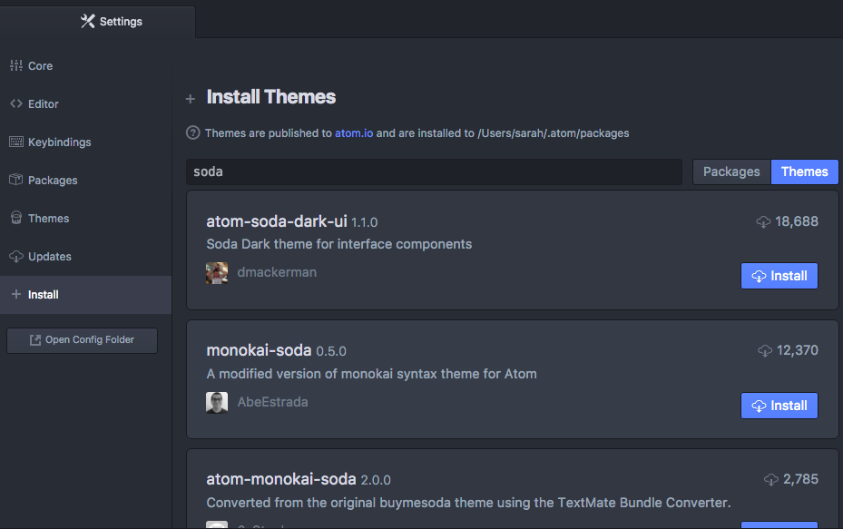

Text Editor: Atom
Atom is the Integrated Development Environment (IDE) we use. After downloading we will configure it with extra tools called plugins that will make your coding life easier.
This section will help guide you through the following steps:
Download and install Atom
Open the Atom website by navigating to https://atom.io/.
Download the file then open it and follow the prompts as they appear. Click Finish when prompted to complete the installation.
Configuring Atom
Next, to get the most out of Atom, we need to install packages. The terms "package" and "plugins" are interchangeable in Atom.
If you have ever downloaded and installed a custom font to use in your word processing program, installing plugins is similar. They are features that can be individually installed to enhance your experience.
There are plugins required as part of the session and there are optional plugins you can install to add a little pizzazz in subsequent setup steps.
Required Packages
For Mac, select to Atom Preferences.
In Windows, select to File Settings.
This will open Settings tab where you'll choose Install from the left side.
In the "Search packages" input, type in the name of the package and press Enter.

Install the following packages
linter-htmlhint – provides HTML hints and helps identify potential mistakes
Search for "linter-htmlhint" and click the Install button
atom-live-server – opens a tab in your default browser to view static webpages and automatically refreshes the tab whenever you save changes in Atom
Search for "atom-live-server" and click the Install button
If you are prompted to install any dependencies select Yes to install them.
Optional - Review tips for using Atom
Uninstall a Package
- To uninstall a package open the settings like we did above. Choose Packages from the settings menu and search for the package you’d like to uninstall. Click on the Uninstall button.
Splitting the Screen
- Open the View menu, choose the Panes option then choose how you want to split your screen.
Keyboard Shortcuts
| Command | Windows Key Combination | Mac Key Combination |
|---|---|---|
| Select all | ctrl + a |
cmd + a |
| Cut | ctrl + x |
cmd + x |
| Copy | ctrl + c |
cmd + c |
| Paste | ctrl + v |
cmd + v |
| Undo | ctrl + z |
cmd + z |
| Save | ctrl + s |
cmd + s |
| Comment selected lines | ctrl + / |
cmd + / |
| Untab one or more lines | shift + tab |
shift + tab |
| Move a line up or down | ctrl + shift + up or down arrow keys |
ctrl + cmd + up or down arrow keys |
| Multi-cursor - make edits in several places at once. | ctrl + d |
cmd + d |
| Open Preferences | ctrl + , |
cmd + , |
Optional - Customize Atom
There are optional plugins and themes you can install to help customize your IDE and make it your own.
Additional Plugins
Atom Beautify - beautify your code. This means it will add indentations for you to make your code better organized and easier to read.
Search for "atom-beautify" and click the Install button
Color Picker – select colors from within your code
Search for "color-picker" and click the Install button
File Icons - display colorful icons in your project folder display to quickly identify file types
Search for "file-icons" and click the Install button
Themes
Make it look pretty with themes.
Follow the instructions in the Required Packages section to open the Settings tab. Click on the Themes button next to the search area to search for themes instead of packages.

Some popular themes include:
Soda
Dracula
Seti
Monokai
Hint: click on the individual theme sections in the search results to view an example of the theme colors